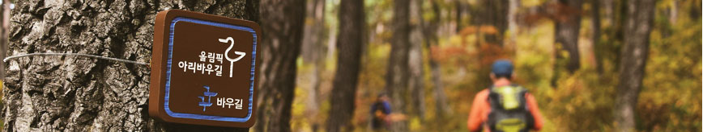

- >
- 코스안내
- >
- 올림픽 아리 바우길

올림픽 아리 바우길은

올림픽(평창) + 아리랑(정선) + 바우(강릉바우길)의 의미를 합쳐 평창의 역사적인 올림픽 개최와
강원도를 대표하는 지역의 아름다움을 표현한 것입니다.
이번 트레킹 코스는 강원 지역의 문화, 경관, 역사, 자원들을 그대로 살려 끊어진 노선을 친환경적으로 정비하고
옛길 복원, 숨겨진 길의 활용 등 자연환경을 최대한 보전하는데 의미가 있습니다.
이동코스
정선5일장 → 조양강전망대 → 문곡1반정류장 → 자작나무숲쉼터 → 금강송길삼거리→ 나전역
기타 준비물
- 출발장소 : 정선 5일장 (강원도 정선군 정선읍 봉양7길 39)
- 점심식사 : 도시락 준비
- 준비물 : 걷기 편하고 안전한 트레킹 용품이나 등산용품 약간의 행동식, 음료등 날씨 변화에 따른 용품도 준비하세요.
- 화장실, 식수 : 정선 5일장, 정선역, 문곡리마을회관, 나전역